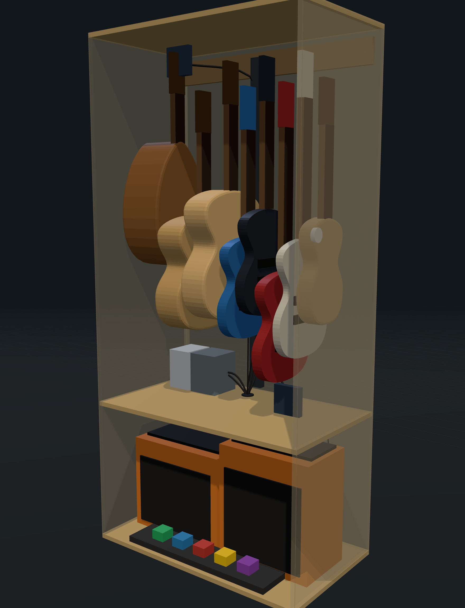
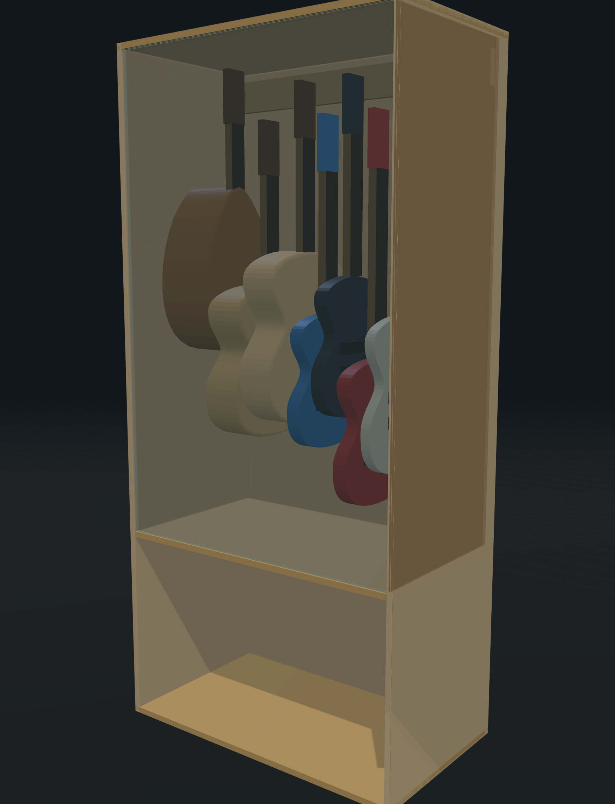
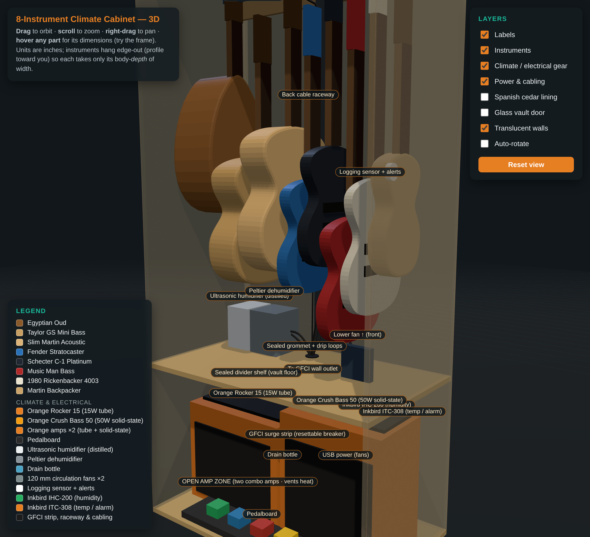
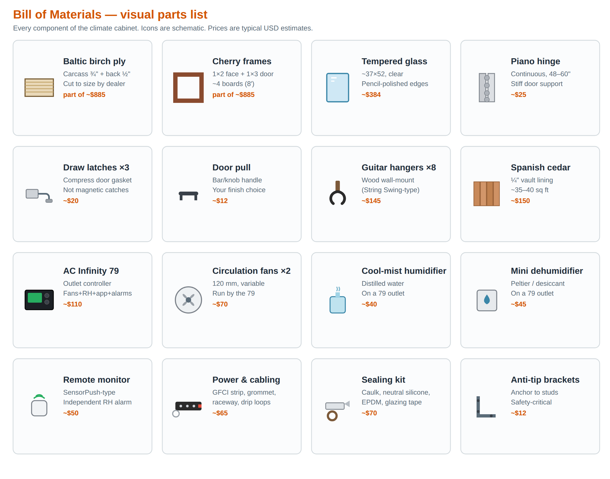
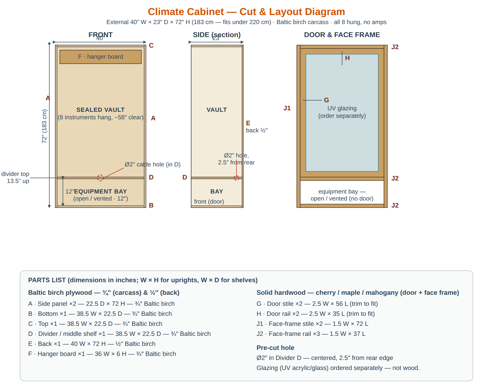

Store and display a collection of 8 instruments in a stable, controlled micro-climate while keeping two combo amps and a pedalboard close at hand — in a single floor-standing cabinet that fits a normal room.
Instruments — especially acoustics with nitrocellulose finishes — are damaged by low humidity (cracking, fret sprout), high humidity (swelling, glue failure, finish hazing), and rapid swings. A normal cabinet does nothing to regulate this. The amps generate heat and must not share sealed air with the instruments.
A two-zone cabinet: a sealed, cedar-lined upper vault holding all 8 instruments at 45–50% RH, sitting above an open, vented lower amp zone that lets amp heat escape to the room. A single smart controller manages humidity and air circulation and raises alarms; temperature is left to the room (which already sits in range) and watched, not actively driven.
The configuration below is the recommendation after weighing cost, reliability, instrument safety, and control quality.
| Subsystem | Decision | Why this over the alternative |
|---|---|---|
| Shell | From-scratch Baltic-birch carcass (¾″ sides/shelves, ½″ back), 85″ tall | Plywood is more dimensionally stable than solid wood and far better than a PAX/particleboard frame; 85″ clears the ceiling with margin. |
| Frame & door | Solid cherry face + door frame; clear tempered, pencil-polished glass (~37×52) | Tempered breaks safe and resists the seamed-edge weakness; pencil-polished edge has no defects. Clear over UV since it sits out of direct sun. |
| Seal | EPDM gasket + 3 draw latches + piano hinge; airtight caulked seams; cedar lining | A compression seal + cedar buffering is what makes a vault; magnetic catches can't hold an air seal. |
| Humidity | Cool-mist humidifier + mini dehumidifier, both on controller outlets | Cool-mist keeps humidity and temperature decoupled (warm-mist would add heat). Two-way control covers dry winters and humid summers. |
| Control | AC Infinity Controller 79 (outlet model) + independent remote monitor | One unit runs fans (variable speed) + switches humidifier/dehumidifier + logs + alarms. The 69 Pro has no AC outlets; two Inkbirds can't vary fan speed or log. |
| Temperature | No active control — alarm only | Room sits at 15–25 °C, already in range; the box's thermal mass damps swings. Heating/cooling adds complexity and condensation risk for no benefit. |
| Air | Two 120 mm variable fans (upper + lower vault) | Even RH/temp, no stratification; variable speed is gentle and quiet vs. on/off. |
Hung edge-out in the vault: Egyptian Oud, Taylor GS Mini Bass, slim Martin acoustic, Fender Stratocaster, Schecter C-1 Platinum, Music Man Bass, 1980 Rickenbacker 4003, Martin Backpacker. Amp zone: Orange Rocker 15 (15 W tube) + Orange Crush Bass 50 (50 W solid-state) + pedalboard.


| Item | Spec / notes | Qty | Est. cost |
|---|---|---|---|
| Shell & frame — cut to size by a hardwood dealer | |||
| ¾″ Baltic birch plywood | Sides A×2 (22.5×85), top/bottom/divider B/C/D, hanger F | 2 sheets | incl. |
| ½″ Baltic birch plywood | Back panel E (40×85) | 1 sheet | incl. |
| Cherry 1×2 + 1×3 | Face frame (1×2) + vault door frame (1×3), 8′ boards | ~4 | incl. |
| Ø2″ grommet hole | Bored in divider, 2.5″ from rear | 1 | incl. |
| Dealer quote (cut Baltic birch + cherry) | ~$885 | ||
| Door, glazing & seal | |||
| Tempered glass, clear | ~37×52, pencil-polished edges, cut to size | 1 | $384 |
| Foam glazing tape | Beds glass in the rabbet | 1 roll | $8 |
| Piano hinge | Continuous, 48–60″ (or 3 cabinet hinges) | 1 | $25 |
| Draw / compression latches | Clamp door onto gasket — not magnetic | 3 | $20 |
| Door pull | Bar or knob | 1 | $12 |
| EPDM / silicone weatherstrip | Door gasket — the key seal | 1 roll | $15 |
| Interior & hanging | |||
| Spanish cedar lining | ¼″, vault walls + back + floor (~35–40 sq ft) | 1 | $150 |
| Brad nails / construction adhesive | Attach cedar | 1 | $15 |
| Guitar hangers | Wood wall-mount (String Swing-type) | 8 | $145 |
| Climate & control | |||
| AC Infinity Controller 79 | Outlet controller: fans + RH outlets + app + alarms | 1 | $110 |
| Circulation fans (UIS) | 120 mm variable, upper + lower vault | 2 | $70 |
| Cool-mist humidifier | Ultrasonic/evaporative, run on distilled water | 1 | $40 |
| Mini dehumidifier | Peltier or renewable desiccant | 1 | $45 |
| Remote monitor | SensorPush-type independent RH/temp alarm | 1 | $50 |
| Optional: Inkbird ITC-308 | Independent temperature alarm / future heat switch | 1 | +$35 |
| Power, sealing & safety | |||
| GFCI power strip | Resettable breaker, surge | 1 | $25 |
| Cable grommet (2″) + duct-seal | Sealed pass-through; re-workable putty around cables | 1 | $13 |
| Cable management | Raceway, ties, drip loops | 1 | $15 |
| Acrylic-latex caulk | Airtight vault seams (low-odor) | 3 | $15 |
| Neutral-cure silicone | Beds glass — not acetoxy (corrodes strings) | 1 | $8 |
| Low-VOC water-based poly + brush | Seal interior faces not cedar-lined | 1 qt | $30 |
| Anti-tip wall brackets | Anchor to studs — safety-critical | 1 set | $12 |
| Wood glue + pocket screws | Carcass assembly (if self-building) | 1 | $25 |
| Estimated materials total (excl. optional Inkbird & tools) | ~$2,100 | ||
Costs are typical USD estimates and exclude shipping, tools, and the amps/instruments (already owned). The dealer line consolidates all cut plywood + cherry into the single ~$885 quote.

| # | Part | Qty | Dimensions | Material |
|---|---|---|---|---|
| A | Side panel | 2 | 22.5 D × 85 H | ¾″ Baltic birch |
| B | Bottom | 1 | 38.5 W × 22.5 D | ¾″ Baltic birch |
| C | Top | 1 | 38.5 W × 22.5 D | ¾″ Baltic birch |
| D | Divider shelf (vault floor) | 1 | 38.5 W × 22.5 D · Ø2″ hole | ¾″ Baltic birch |
| E | Back | 1 | 40 W × 85 H | ½″ Baltic birch |
| F | Hanger board | 1 | 36 W × 6 H | ¾″ Baltic birch |
| G | Door stiles | 2 | 2.5 × ~57 | Cherry 1×3 |
| H | Door rails | 2 | 2.5 × ~35 | Cherry 1×3 |
| I | Door glazing | 1 | ~37 × 52 | Tempered glass |
| J | Face frame | 2+3 | 1.5 × 85 (stiles) · 1.5 × 37 (rails) | Cherry 1×2 |
Plywood nests onto two ¾″ sheets + one ½″ sheet; cherry from ~4 8′ boards. The two sides fit on one ¾″ sheet (45″ of 48″ width); top/bottom/divider/hanger on the second.
| Condition | Action | Device |
|---|---|---|
| Vault RH < 45% (low edge) | Energize humidifier outlet; run fans | Humidifier (cool-mist) + fans |
| Vault RH > 50% (high edge) | Energize dehumidifier outlet; run fans | Mini dehumidifier + fans |
| RH inside band | Both moisture devices off; fans cycle for mixing | Fans only |
| Temp < 15 °C or > 25 °C | Alarm (app + monitor). No active heat/cool. | Controller + remote monitor |
| RH out of band > set time | Push alarm; log event | Controller + remote monitor |
| Power loss | Cedar buffers passively; monitor (battery) keeps logging/alarming | Cedar + independent monitor |
| ID | Requirement | Acceptance test |
|---|---|---|
| R1 | Vault holds 45–50% RH | Empty 48 h burn-in stays in band ±5% with no manual intervention. |
| R2 | Air seal is effective | With humidifier off, vault RH decays toward room only slowly (hours, not minutes); no obvious leak path at the door perimeter. |
| R3 | Temperature stays in band | Logged vault temp remains 15–25 °C across a normal day; high/low alarm fires when forced out. |
| R4 | Devices never fight | Logs show humidifier and dehumidifier never energized within the same deadband cycle. |
| R5 | Amp heat is exhausted | With both amps on, amp-zone heat vents to the room; vault temp unaffected (sealed divider). |
| R6 | Independent alarm path | Remote monitor alerts on out-of-band RH/temp with the main controller unplugged. |
| R7 | Structural safety | Cabinet anchored to studs; does not tip when the door is opened fully and loaded. |
| R8 | Material safety | All finishes/sealants fully cured before loading; no acetoxy silicone; distilled water only. |
| R9 | Fits the room | Stands upright under the 86.3″ / 220 cm ceiling and walks into final position. |
| Decision | Resolution |
|---|---|
| Build vs. retrofit | Build from scratch (Baltic birch) — better seal & stability than a PAX/retrofit. |
| Height | 85″ (216 cm) — extra room into the vault while clearing the ceiling. |
| Amps inside? | Yes — open, vented 24″ amp zone below the vault. |
| Glazing | Clear tempered, pencil-polished edges (all edgework free; chose the strongest/safest). |
| Humidifier type | Cool-mist (keeps temperature independent). |
| Controller | AC Infinity Controller 79 (outlet model) over 69 Pro / dual Inkbird. |
| Active temperature control | Dropped — 15–25 °C is in range; alarm only. |
| Thermal break under divider | Optional — amps run only briefly. |